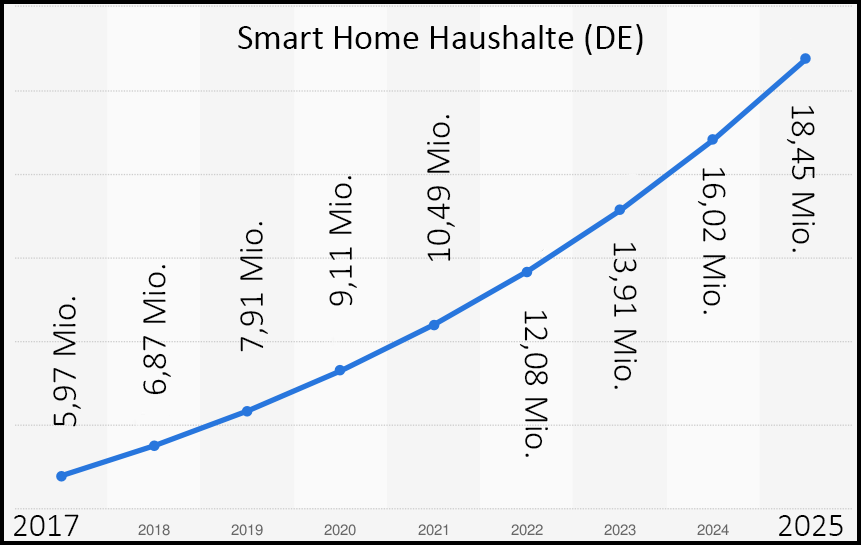

Wir haben immer das Beste und Neueste und Sie brauchen es sofort!
mehr
Nicht nur bei "Super Foods" entwickeln sich Trends und neue Expertenmeinungen im Minutentakt.
Auch bei
Quelle: Statista (1) Statista (2)

Geräte an Strauch hängend
mehr
Die Anzahl der "smarten" Haushalte steigt kontinuierlich und wird auch als weiterhin stark steigend prognostiziert. Hierdurch wächst die Gefahr von Lauschangriffen und Einschnitte in die Privatsphäre durch Smart-Speaker enorm.

Quelle: Statista (1), Statista (2), Ministerium für Verbraucherschutz

Schauen Sie hinter die Kullisen!
mehr
Egal ob Wearable, Smartphone oder Auto, für alle Geräte sind eine reiher seltener und wertvoller Rohstoffe von Nöten. Die Arbeitsbedingungen die mit der Förderung von Materialien wie Kobalt, einem für Akkus essentieller Rohstoff, verbunden sind werden häufig beim Kauf übersehen.
Damit die nächste Anschaffung so billig wie möglich ist, müssen Produktionskosten auf einem Minimum gehalten werden. Dies ist häufig verbunden mit menschenunwürdigen Arbeitsbedingungen und in manchen Fällen auch Kinderarbeit.
Vor allem in der Demokratischen Republik Kongo ist Kinderarbeit ein großes Problem und wird indirekt von Großkonzertnen wie BMW, Samsung und VW finanziert.
Glücklicher Weise gibt es immer mehr Hersteller die genauestens auf die Produktionskette achten und faire Arbeitsbedingungen schaffen.
Vielleicht ist also auch Ihr nächstes Smartphone ein "Fairphone" oder ein vergleichbares Produkt.
Quelle: Amnesty International Fairphone